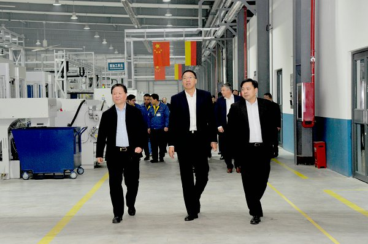

12月19日，中原内配战略客户——一汽解放发动机事业部在洛阳举办采购工作学习交流会，旨在聚合250多家供应商的力量，全力以赴打赢国六攻坚战，持之以恒打造引领供应链，共同引领行业技术进步。
中原内配作为一汽解放发动机事业部风雨同行20年的战略合作伙伴，积极承办此次交流会并以此为契机传播品牌、推介产品、提升现场、融合理念。

这是一次极有影响力的品牌传播会。
会议前一天，一汽解放发动机事业部党委书记、总经理钱恒荣带领其领导班子在集团董事长薛德龙的陪同下参观中原内配集团。
从中内凯思到集团展厅，从能效中心到自动化、智能化车间，一条条自动化、智能化生产线，一个个信息化、数据化集控中心，一处处宽广整洁、井然有序的生产现场，都展示着中原内配速度、中原内配的国际范儿。
钱恒荣书记表示，自己六年间两次前来，没想到中原内配在薛董事长的带领下变化如此巨大，不仅装备水平大幅度提升，而且能源管理、智能制造走在了行业前列，这次会议选择中原内配作为经验交流地点是完全正确的。
19日上午，在洛阳会议现场，一汽解放发动机事业部党委书记、总经理钱恒荣向中原内配颁发“最佳供应商”奖。集团总裁张冬梅登上领奖台，接受颁奖。
中原内配独具特色的智能制造模式被一汽解放发动机事业部精选为典型经验向与会供应商分享。中原内配副总经理刘治军专题讲述了中原内配八年“精益化、自动化、智能化”之路，用一项项颠覆性的新模式、新理念、新成果展示中原内配紧踏行业进步方向、勇立科技革命潮头的新风采。
这是一场难得的集团产品推介会。
下午，不同领域的供应商分批走进产业园，不仅实地领略了中原内配独具特色的智能制造模式，而且目睹了高效内燃机零部件和新兴领域的布局。
在企业展厅，发动机增压器、在线检测技术、刀具砂条等转型产品引起参观者的极大兴趣，宣传画册和名片被争抢一空。一些客人抓紧时机，与中原智信的领导建立了联系，有的要求到鼎锐科技现场观摩、洽谈合作，一位客人在听取了能效中心的讲解后，兴奋地说，回去我们也要抓紧建立一个能效管理平台。
这是一次现场管理大提升。
客人们走进铸造车间，观看着干净整洁的铸造现场、正在生产着国际高端气缸套的自动化铸造线和实时监控生产过程的集控中心，感受着现代铸造的新风采。
在智能化车间，客人们环绕着自动化、智能化生产线而行，驻足在集控中心门前，用心体验着“机器换人”、“设备换芯”、“无人值机”、“在线检测”以及大数据等新科技给现代制造业带来的巨大变化。
为了这一天，中原内配从花草树木修剪摆放、各个参观点卫生、噪音粉尘管控、各种物品的整修、现场看板的设计等实施了全方位大提升，整改范围之广，涉及人员之多，堪称第一次，并形成了一整套更高水平的现场管理方案。
这是一次整零企业管理理念的深度融合。
会议筹备工作历时近一百天，一汽解放发动机事业部成立专门小组走进中原内配，联合做好各项筹备事宜，其严谨务实的工作理念和中原内配高效改进、确保客户满意的真诚互相感动着对方。
晚上，薛董事长用“一个相互学习的平台，一个命运共同体，一个共同美好的未来”，“零部件强，则发动机强；发动机强，则零部件强”道出了一汽解放发动机事业部策划此次会议的精心，也道出了中原内配坚定不移与高端动力企业合力打赢国六攻坚战、勇当行业引领者的真心和决心，激起了与会供应商的强烈共鸣。